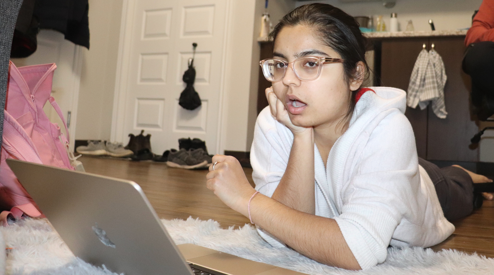

Intro

Hi there! I'm currently an undergraduate student at Mount Allison University completing a Bachelor of Science in Computer Science and Mathematics with a minor in Biochemistry.
I'm overall interested in AI, healthcare, and their ethical implications.
If you'd like to know more, check out some of the work I've done!
In my free time, I love to watch sitcoms, dramedies, and all sorts of funky things. Check out this list of media I really enjoy.
Work

Currently, I'm a summer research intern at The Simpson Lab developing a Responsible AI podcast (coming out soon!), researching capabilities of LLMs in healthcare, and looking at non-western ethical frameworks for healthcare AI systems.
Previously, I've worked for Dr. Matthew Betti on mathematical epidemiology where I mathematically modelled and analyzed COVID-19 data in Canada using a modified SIR model and worked on modifying a mathematical ODE model of honeybee colonies to analyze the threshold for hygienic behaviour.
I've also had the opportunity to be a fellow at the AI4Good lab in 2022 and attend the Bumblekite machine learning summer school in healthcare and the biosciences in July 2023.
For an incomplete overview of some of the things I've done, check out my resume.
Blog
An assortment of media I enjoy
Contact
I am always excited to talk about tech, AI, ethics, and its implications for our healthcare system as well as sitcoms, favourite books, and the like.
Feel free to reach out to me via email, linkedin or twitter if you're interested in discussing anything mentioned above (or otherwise!).
Some media I enjoy!
Here is an incomplete list of shows, movies, and books I enjoy.
Currently watching...
The Bear
The Afterparty
Seinfeld
Currently reading...
Weapons of Math Destruction by Cathy O'Neil
Animal Farm by George Orwell
The Bell Jar by Sylvia Plath
P.S. check out my Goodreads for an up to date list!
Personal Favourite...
Books
More than a Glitch by Meredith Broussard
Ms. Marvel comics
The Metamorphosis by Franz Kafka
Between the World and Me by Ta-Nehisi Coates
Six of Crows duology by Leigh Bardugo
Shows
Community
Parks and Recreation
Succession
Nathan for You
The Rehearsal
We are Body Parts
What We Do in the Shadows
Veep
(not in order of importance!)
Movies
Everything Everywhere All At Once by The Daniels
Boy by Taika Waititi
Parasite by Bong Joon-Ho
Hunt for the Wilderpeople by Taika Waititi
The Green Knight by David Lowery
Pride and Prejudice (2005) by Joe Wright
Bodies Bodies Bodies by Halina Reijn
Check out my Letterboxd for more!